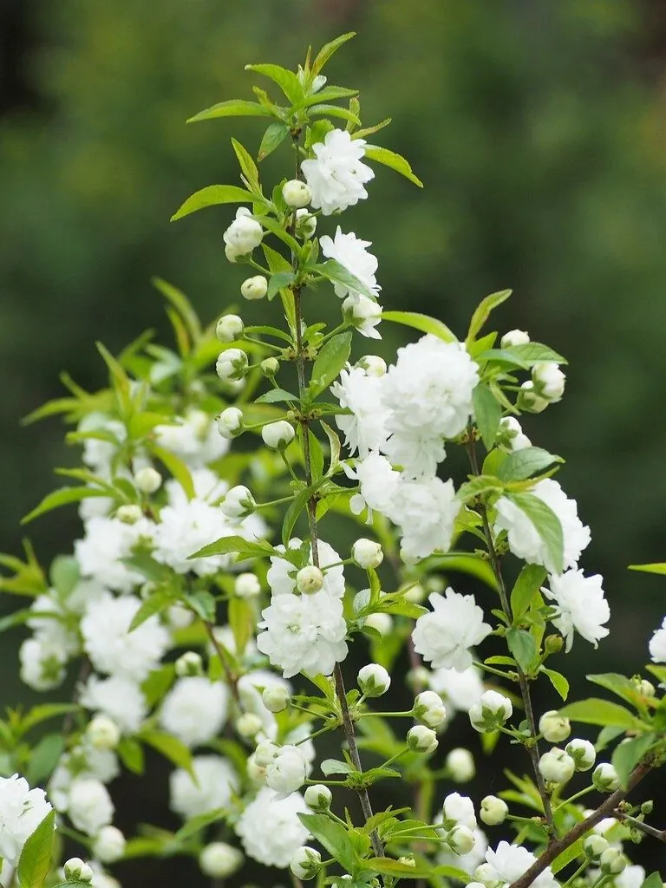

灌木与花木 · 植物界
麦李 Prunus glandulosa

蔷薇科落叶灌木，春季先叶开粉红或白色花，花量繁密、花色柔和，是北方庭院与花篱常见的早春观花灌木。
- 分类
- 门被子植物门纲木兰纲目蔷薇目科蔷薇科属李属
- 栖息环境
- 山坡灌丛、林缘与庭院，喜光耐寒
- 地理分布
- 中国华北、华东、华中；日本有分布
- 保护级别
- 暂无评估；中国未列入国家重点保护野生植物名录
物种志
麦李为蔷薇科李属落叶灌木，高 1–2 米，枝条细密，幼枝被短柔毛。叶互生，卵形至椭圆状披针形，边缘具细锯齿。花单生或 2 朵并生，粉红色或白色，花瓣 5 枚，花期 3–4 月，先叶开放；果实为核果，近球形，成熟时红色，果期 6–7 月。
麦李原产中国华北、华东至华中地区，生于山坡灌丛与林缘，日本也有分布。它喜光，也耐半阴，耐寒、耐旱，适宜疏松肥沃、排水良好的土壤。春季花量繁密、花色柔和，是北方庭院与花篱常见的早春观花灌木；重瓣品种观赏价值更高，常与连翘、榆叶梅配植。栽培以分株和扦插繁殖为主，花后修剪可促进新枝萌发，并保持株形丰满。
形态与习性
- 株高1–2 米，枝条细密
- 花期3–4 月，花粉红或白色
- 果期6–7 月，核果红色
- 光照喜光，也耐半阴
- 水分耐旱，忌积水
- 土壤疏松肥沃、排水良好的土壤
- 主要用途早春观花、花篱与庭院点缀
趣味知识
- 麦李先叶开花，早春满枝粉花，是北方重要的早春花木。
- 它的重瓣品种花形更饱满，观赏价值更高。
- 麦李与郁李亲缘很近，但麦李株形更矮、花更繁密。
- 花后修剪可促发新枝，使翌年开花更旺。